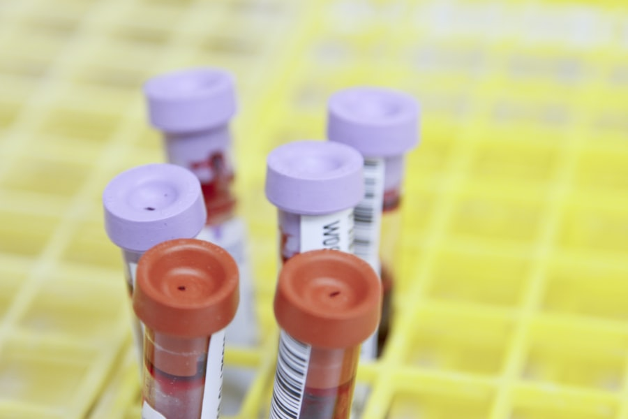
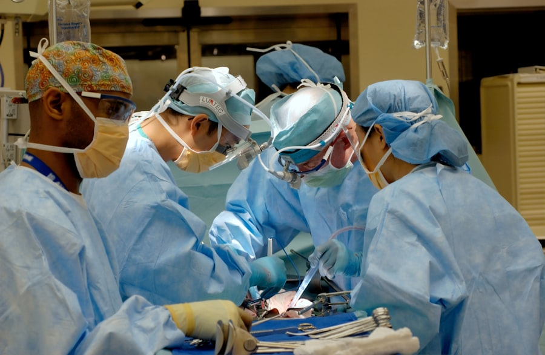
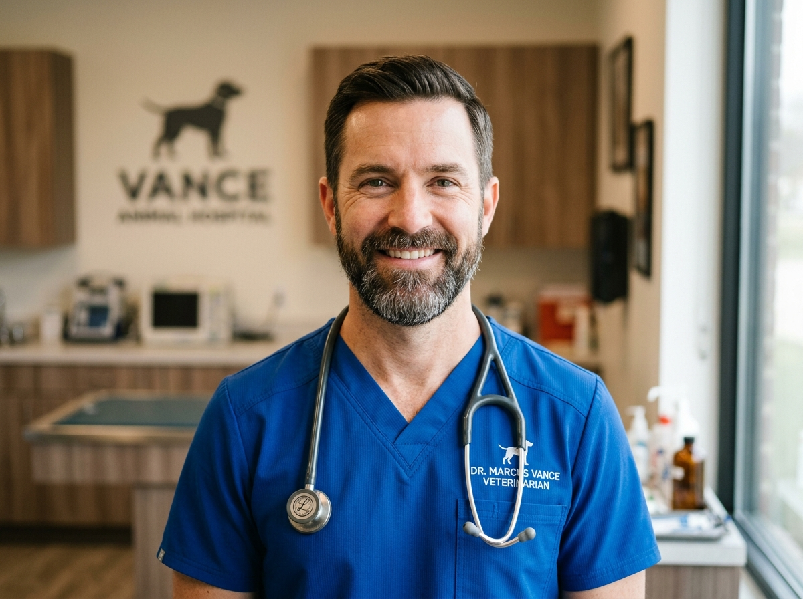
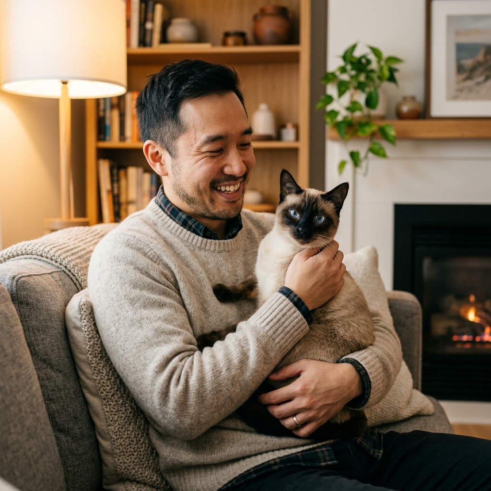

Our Commitment to Companion Animal Care
Founded by veterinary surgeons who believed medical excellence should always be delivered with warmth, empathy, and fear-free handling techniques.


From a Two-Doctor Practice to an Accredited Animal Hospital
In 2012, Dr. Emily Carter and Dr. Marcus Vance realized that traditional clinical environments were often cold, noisy, and frightening for pets. They envisioned an animal medical center combining university-tier diagnostic capabilities with the gentle intimacy of a family practice.
Today, VetCare Pro encompasses over 12,000 square feet of state-of-the-art medical architecture, including dedicated feline and canine examination suites, digital radiology rooms, two sterile operating theatres, and a 24/7 staffed Intensive Care Unit.
AAHA Accredited
Meeting 900+ rigorous standards of veterinary excellence.
Zero Strife Protocol
Certified fear-free veterinary staff and quiet handling zones.
Our Core Veterinary Philosophy
Every recommendation we make is anchored in clinical research, medical responsibility, and deep respect for the human-animal bond.
Compassion First
Treating every animal with the same gentle patience and dignity we would demand for our own family members.
Evidence-Based
Continuously updating protocols according to peer-reviewed veterinary studies and surgical advancements.
Total Transparency
Clear diagnosis explanations, itemized fee estimates, and honest prognostic counseling without hidden costs.
Rapid Response
24/7 readiness to triage life-threatening trauma, toxicities, and post-operative complications immediately.
World-Class Facilities Designed for Healing
Precision medicine requires precision infrastructure. Our diagnostic and inpatient suites are maintained to the highest clinical hygiene standards.
-
HEPA-Filtered Surgical Theatres:
Positive pressure air filtration prevents airborne contamination during open cavity and orthopedic operations.
-
Multi-Parameter Telemetry:
Continuous Capnography, ECG, Pulse Oximetry, and Doppler blood pressure monitoring for all anesthetized patients.
-
Oxygen Enriched ICU Cages:
Climate and humidity controlled Snyder oxygen chambers for critical respiratory distress cases.

Meet Our Clinical Directors
Guided by dedicated clinicians with over 50 combined years of veterinary surgical, medical, and emergency experience.
Dr. Emily Carter
DVM, DACVS • Hospital Co-Founder
Specialist in canine orthopedics, TPLO cruciate ligament reconstruction, and reconstructive soft tissue surgery.
Meet Our Team
Dr. Marcus Vance
BVSc, DACVIM • Head of Internal Medicine
Focusing on complex endocrine disorders, gastrointestinal endoscopy, and non-invasive abdominal ultrasound.
Meet Our TeamDr. David Kim
DVM, VECCS • Director of Emergency Medicine
Leading our 24/7 emergency response team with expertise in resuscitation, trauma resuscitation, and critical stabilization.
Meet Our TeamWords From Families Who Trust Us
Behind every medical milestone is a family who put their trust in our compassionate care. Here is what pet parents say about their journey with us.
"They treated Max like their own dog during his knee surgery."
"When Max tore his cruciate ligament playing fetch, we were terrified. Dr. Emily Carter and the surgical team walked us through every step of the TPLO procedure and called us the moment he woke up. Max is back to running happily in the yard with zero limp!"
"The separate feline lounge made all the difference for our anxious cat."
"Our cat Luna used to shake with panic at veterinary clinics. VetCare Pro's quiet cat entrance and calming pheromone suites completely changed her experience. Dr. Marcus Vance took his time to let Luna explore before even touching a stethoscope."

"Gave our 12-year-old senior beagle a second lease on comfortable life."
"Rocky was struggling to climb stairs and seemed in chronic pain from arthritis. Nurse Alisha and Dr. Kim started him on Class IV laser therapy sessions and a tailored joint protocol. Within three weeks, Rocky was greeting us at the door with his puppy wag back."
Caring for Pets Beyond Hospital Walls
Through our PawsForward foundation, we provide subsidized sterilization for rescue shelters, partner with local animal rescues, and offer emergency care grants for families facing unexpected medical hardship.